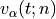
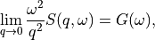

8. Analysis: Dynamics
This menu contains all data manipulations and appears as in the picture below when a trajectory is loaded. As indicated by the plus buttons, each of these options is a menu in itself.

They are explored in greater depth in the following sections, and the analyses are in turn explored in their subsections. Some contain a discussion of the theory behind the computation, and all show the analysis window of that analysis, the one that is launched by double-clicking the option in this Plugins panel.
Each analysis window is different since each requires different parameters to be configured before it can be run. However, all of them have the same structure (example window below), consisting of these parts:
trajectory box shows the path to the MMTK NetCDF trajectory that this analysis will be performed on.
Parameters are a group of options, of which the common ones are discussed in depth in Appendix 2. These are the options which vary from analysis to analysis. The only parameters that exist on every analysis are Frames and Output files.
Buttons are situated at the bottom of each analysis and consist of these options:
Help opens the source code documentation for the relevant class in an MDANSE window.
Save opens a file browser that allows you to save the current analysis with the set options into a python script which can be run from the command line. More information about scripts in Using MDANSE from command line.
Run starts the analysis and prompts you whether you want to close the window. The status of the analysis can be found in the Jobs panel, though there is a known bug where successful analyses do not show up.
8.1. Dynamics
This section contains the following Plugins:
8.1.1. Angular Correlation
Available for trajectories only
Theory and implementation
The angular correlation analysis computes the autocorrelation of a set of vectors describing the extent of a molecule in three orthogonal directions. This kind of analysis can be useful when trying to highlight the fact that a molecule is constrained in a given direction.
For a given triplet of non-colinear atoms g=(a1,a2,a3), one can derive an orthonormal set of three vectors v1, v2, v3 using the following scheme:
(1)

where n1 and n2 are respectively the normalized vectors along (a1,a2) and (a1,a3) directions.
v2 is defined as the clockwise normal vector orthogonal to v1 that belongs to the plane defined by a1, a2 and a3 atoms
(2)

Thus, one can define the following autocorrelation functions for the vectors v1, v2 and v3 defined on triplet t :
(3)
And the angular correlation averaged over all triplets is:
(4)
where Ntriplets is the number of selected triplets.
GUI

Parameters:
8.1.2. Density Of States
Theory and implementation
MDANSE calculates the power spectrum of the VACF, which in case of the mass-weighted VACF defines the phonon discrete DOS, (see the section on VACF) defined as:
(5)
Nt is the total number of time steps and
(6)
is the frequency step.
(7)
can be computed either for the isotropic case or with respect to a user-defined axis. The spectrum
(8)
is computed from the unnormalized VACF, such that DOS(0) gives an approximate value for the diffusion constant
(9)
(see Eqs.  and
and  ).
).
(10)
is smoothed by applying a Gaussian window in the time domain [10] (see the section on Spatial Density). Its width in the time domain is
(11)
, where T is the length of the simulation. We remark that the diffusion constant obtained from DOS is biased due to the spectral smoothing procedure since the VACF is weighted by this window Gaussian function. MDANSE computes the density of states starting from both atomic velocities and atomic coordinates. In this case the velocities are computed by numerical differentiation of the coordinate trajectories correcting first for possible jumps due to periodic boundary conditions.
GUI
available for trajectories only


8.1.3. General AutoCorrelation Function
available for trajectories only


trajectory variable
Format: drop-down
Default: configuration
Description: determines the variable for which the autocorrelation function is calculated. Therefore, if the selected variable is ‘configuration’, essentially position autocorrelation function is calculated.
8.1.4. Mean Square Displacement
Theory and implementation
Molecules in liquids and gases do not stay in the same place but move constantly. This process is called diffusion and it happens quite naturally in fluids at equilibrium. During this process, the motion of an individual molecule does not follow a simple path. As it travels, the molecule undergoes some collisions with other molecules which prevent it from following a straight line. If the path is examined in close detail, it will be seen to be a good approximation to a random walk. Mathematically, a random walk is a series of steps where each step is taken in a completely random direction from the one before. This kind of path was famously analysed by Albert Einstein in a study of Brownian motion. He showed that the Mean-Square Displacement (MSD) of a particle following a random walk is proportional to the time elapsed. This relationship can be written as
(12)
where < r2 > is the MSD and t is the time. D and C are constants. The constant D defines the so-called diffusion coefficient.
The Figure 1 shows an example of an MSD analysis performed on a water box of 768 water molecules. To get the diffusion coefficient out of this plot, the slope of the linear part of the plot should be calculated.

Figure 1: MSD calculated for a 100 ps MD simulation of 256 water molecules using NPT condition at 1 bar and 300 K.
Defining
(13)
the MSD of particle  can be defined as:
can be defined as:
(14)
where R_(t0) and R_(t0 + t) are respectively the position of particle
at times t0 and t0 + t. One can introduce an MSD with respect to a
given axis n:
(15)
with
(16)
The calculation of MSD is the standard way to obtain diffusion coefficients from Molecular Dynamics (MD) simulations. Assuming Einstein-diffusion in the long time limit one has for isotropic systems
(17)
There exists also a well-known relation between the MSD and the velocity autocorrelation function. Writing
(18)
in Eq.  one can show (see
e.g. [11]) that
one can show (see
e.g. [11]) that
(19)
Using now the definition  of the diffusion
coefficient one obtains the relation
of the diffusion
coefficient one obtains the relation
(20)
With Eq.  this can also be written as
this can also be written as
(21)
Computationally, the MSD is calculated using the Fast Correlation Algorithm (FCA) [12]. In this framework, in the discrete case, the mean-square displacement of a particle is given by
(22)
where r(k) is the particle trajectory and  is the number of frames of
the trajectory. We define now the auxiliary function
is the number of frames of
the trajectory. We define now the auxiliary function
(23)
which is split as follows:
(24)
(25)
(26)
The function SAB(m) can be computed using the FCA method described in the section on Spatial Density. For SAA+BB(m) the following recursion relation holds:
(27)
(28)
This allows one to construct the following efficient scheme for the computation of the MSD:
Compute
(29)

;
(30)

.
Compute
(31)

Compute SAB(m) using the Fast Fourier Transform (FFT) method.
Compute MSD(m) in the following loop:
(32)
(33)
m running from 0 to Nt - 1
It should be noted that the efficiency of this algorithm is the same as for the FCA computation
of time correlation functions since the number of operations in step (1), (2), and (4) grows
linearly with Nt.
GUI


8.1.5. Order Parameter
Theory and implementation
Adequate and accurate cross comparison of the NMR and MD simulation data is of crucial importance in versatile studies conformational dynamics of proteins. NMR relaxation spectroscopy has proven to be a unique approach for a site-specific investigation of both global tumbling and internal motions of proteins. The molecular motions modulate the magnetic interactions between the nuclear spins and lead for each nuclear spin to a relaxation behaviour which reflects its environment. Since its first applications to the study of protein dynamics, a wide variety of experiments has been proposed to investigate backbone as well as side chain dynamics. Among them, the heteronuclear relaxation measurement of amide backbone 15N nuclei is one of the most widespread techniques. The relationship between microscopic motions and measured spin relaxation rates is given by Redfield’s theory [13]. Under the hypothesis that 15N relaxation occurs through dipole-dipole interactions with the directly bonded 1H atom and chemical shift anisotropy (CSA), and assuming that the tensor describing the CSA is axially symmetric with its axis parallel to the N-H bond, the relaxation rates of the 15N nuclei are determined by a time correlation function,
(34)
which describes the dynamics of a unit vector μi(t) pointing along the 15N-1H bond of the residue i in the laboratory frame. Here P2(.) is the second order Legendre polynomial. The Redfield theory shows that relaxation measurements probe the relaxation dynamics of a selected nuclear spin only at a few frequencies. Moreover, only a limited number of independent observables are accessible. Hence, to relate relaxation data to protein dynamics one has to postulate either a dynamical model for molecular motions or a functional form for Cii(t), yet depending on a limited number of adjustable parameters. Usually, the tumbling motion of proteins in solution is assumed isotropic and uncorrelated with the internal motions, such that:
(35)
where CG(t) and
(36)
denote the global and the internal time correlation function, respectively. Within the so-called model free approach [14], [15] the internal correlation function is modelled by an exponential,
(37)
Here the asymptotic value
(38)
is the so-called generalized order parameter, which indicates the degree of spatial restriction of the internal motions of a bond vector, while the characteristic time
(39)
is an effective correlation time, setting the time scale of the internal relaxation processes.
(40)
can adopt values ranging from 0 (completely disordered) to 1 (fully ordered). So,
(41)
is the appropriate indicator of protein backbone motions in computationally feasible timescales as it describes the spatial aspects of the reorientational motion of N-H peptidic bonds vector.
When performing Order Parameter analysis, MDANSE computes for each residue i both
(42)
and
(43)
. It also computes a correlation function averaged over all the selected bonds defined as:
(44)
where Nbonds is the number of selected bonds for the analysis.
GUI
available for trajectories only

reference direction
x-component
Format: int or float
Default: 0
Description: <insert>
y-component
Format: int or float
Default: 0
Description: <insert>
z-component
Format: int or float
Default: 1
Description: <insert>
8.1.6. Position AutoCorrelation Function
available for trajectories only


8.1.7. Velocity AutoCorrelation Function
Theory and implementation
The Velocity AutoCorrelation Function (VACF) is another interesting property describing the dynamics of a molecular system. Indeed, it reveals the underlying nature of the forces acting on the system.
In a molecular system that would be made of non-interacting particles, the velocities would be constant at any time triggering the VACF to be a constant value. Now, if we think about a system with small interactions such as in a gas-phase, the magnitude and direction of the velocity of a particle will change gradually over time due to its collision with the other particles of the molecular system. In such a system, the VACF will be represented by a decaying exponential.
In the case of solid phase, the interactions are much stronger and, as a results, the atoms are bound to a given position from which they will move backwards and forwards oscillating between positive and negative values of their velocity. The oscillations will not be of equal magnitude however, but will decay in time, because there are still perturbative forces acting on the atoms to disrupt the perfection of their oscillatory motion. So, in that case the VACF will look like a damped harmonic motion.
Finally, in the case of liquid phase, the atoms have more freedom than in solid phase and because of the diffusion process, the oscillatory motion seen in solid phase will be cancelled quite rapidly depending on the density of the system. So, the VACF will just have one very damped oscillation before decaying to zero. This decaying time can be considered as the average time for a collision between two atoms to occur before they diffuse away.
Mathematically, the VACF of atom in an atomic or molecular system is
usually defined as
(45)
In some cases, e.g. for non-isotropic systems, it is useful to define VACF along a given axis,
(46)
where  is given by
(47)
The vector n is a unit vector defining a space-fixed axis.
The VACF of the particles in a many body system can be related to the incoherent dynamic structure factor by the relation:
(48)
where G( ) is the Density Of States (DOS). For an isotropic system it
reads
) is the Density Of States (DOS). For an isotropic system it
reads
(49)
(50)
For non-isotropic systems, relation  holds if the DOS
is computed from the atomic velocity autocorrelation functions
holds if the DOS
is computed from the atomic velocity autocorrelation functions
(51)
, where nq is the unit vector in the direction of q.
GUI
available for trajectories only